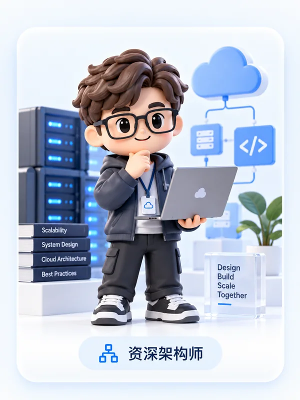
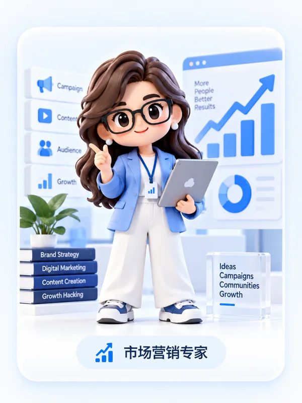
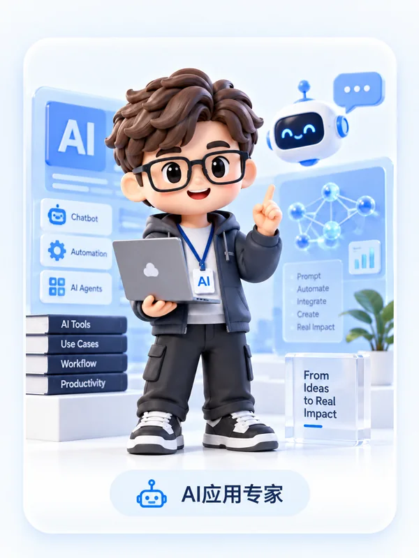
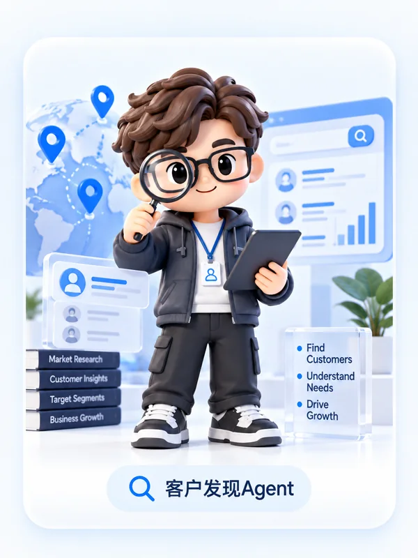
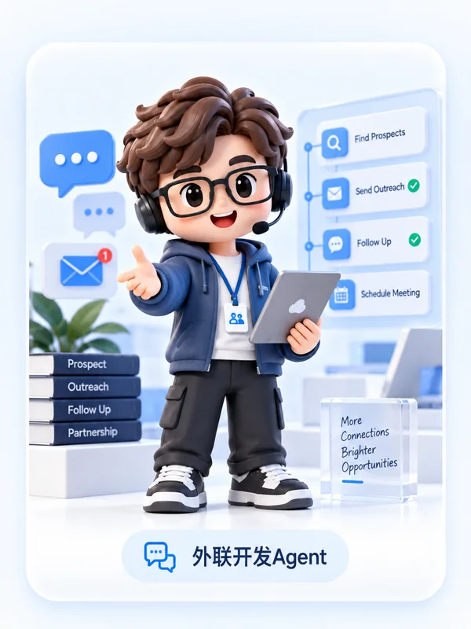
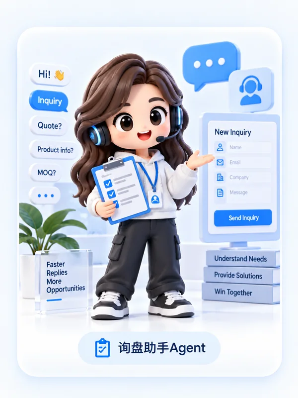
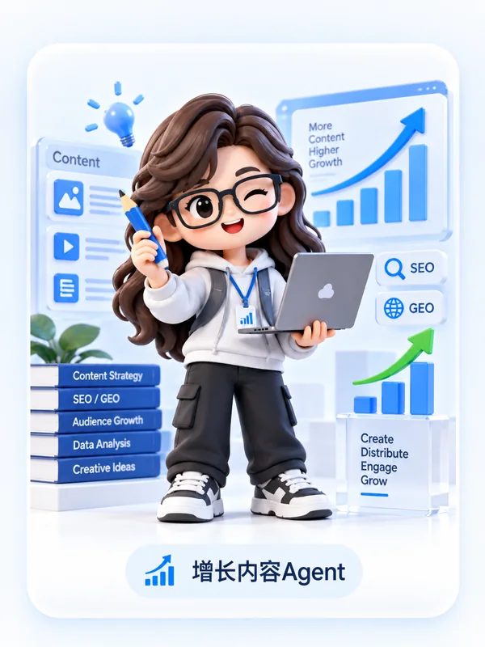

ARCHITECTURE资深架构师
负责产品技术架构、系统稳定性与能力协同，把复杂能力沉淀为可持续迭代的产品底座。
产品底座我们更看重“销售能不能理解”“结果有没有证据”“关键判断能不能由人确认”。因此公开版产品坚持几个原则。
系统应尽可能先理解已有资料，再让企业确认，而不是要求业务团队重新填一遍复杂字段。
不把猜测包装成事实，不因为信息缺失就随意给企业贴标签。
客户开发、报价与业务承诺等关键节点，人始终保留最终判断权。
产品、市场、外贸与 AI 四类能力互补，把真实业务经验带进产品设计与演示。

ARCHITECTURE负责产品技术架构、系统稳定性与能力协同，把复杂能力沉淀为可持续迭代的产品底座。
产品底座
MARKETING负责品牌定位、传播表达、市场策略与增长路径，让产品更接近真实获客与推广场景。
市场增长把客户开发、询盘、报价、跟进与客户经营中的真实经验带进产品设计与演示逻辑。
业务实战
AI APPLICATION把大模型、智能代理与自动化能力真正落到业务场景中，让 AI 变成可用的工作能力。
AI 落地每个 Agent 专注一类关键工作，分工清晰，也方便你按自己的业务环节来理解产品。

DISCOVERY AGENT持续寻找潜在客户、市场信号与新机会，并把零散信息整理成可读的客户画像。
找客户
OUTREACH AGENT结合客户背景与沟通场景，准备更自然的开发内容、触达切入点与后续跟进节奏。
做触达
INQUIRY AGENT帮助收集需求、补齐关键信息并整理商机，让访客问题更快进入销售处理流程。
接询盘
GROWTH AGENT把买家问题与产品知识沉淀成 SEO / GEO 内容资产，服务自然增长和长期可见性。
做增长告诉我们你的行业和目标市场，我们将以实际外贸场景展示产品。公开版 Demo 不会真正提交数据。